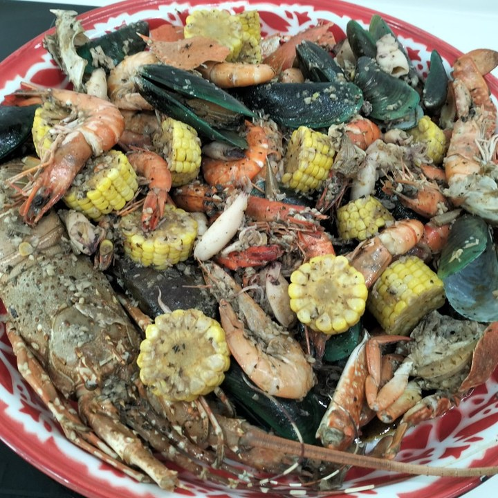
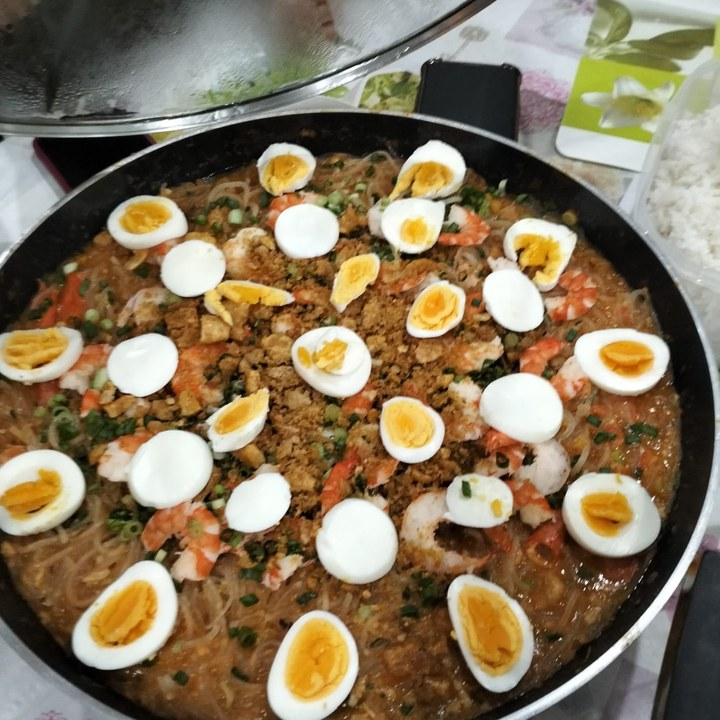
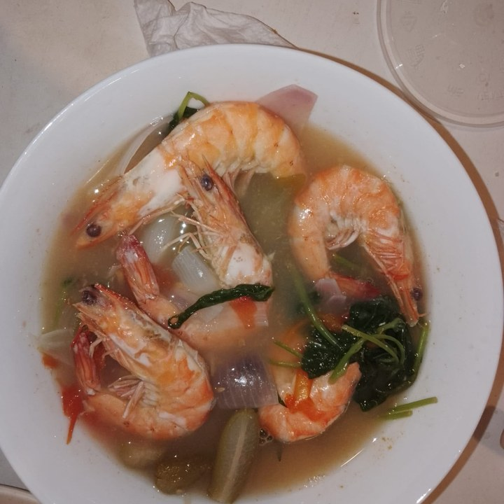
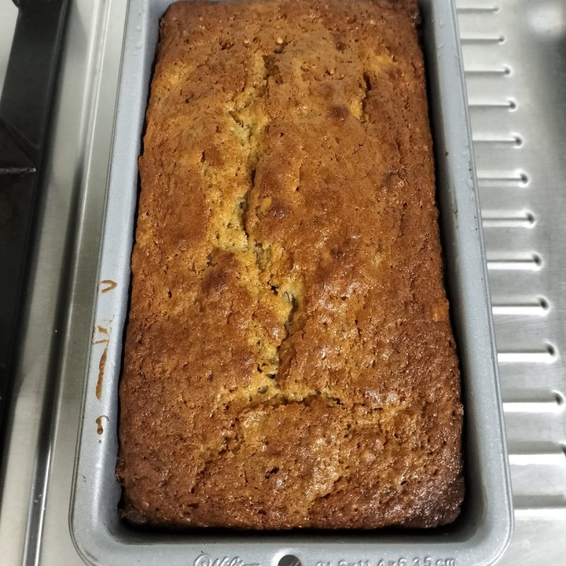
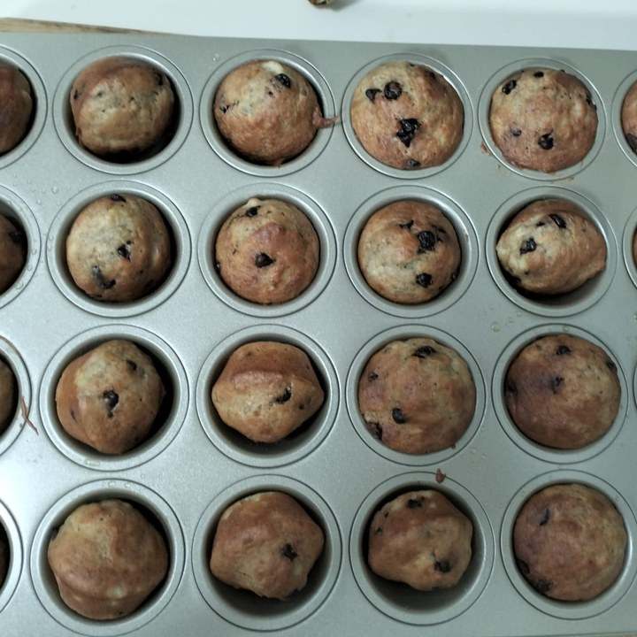

Filipino · 55 · Western cooking, children & running a house
Three written letters of recommendation — from 2009, 2013 and 2023. Twenty-five years in Singapore, almost all of it with expatriate families, and eight of those years with the first family she ever worked for.
Laura’s greatest qualities are her kindness, honesty, discretion, common sense and easy-going nature.
— Nicole, her employer of nearly four years, writing in 2013
Trust signals
Our strongest trust signal — a family who has lived with her work, putting it in writing. All three letters are available to families proceeding seriously.
At a glance
The essentials
Available from
Any time. Transfer within Singapore.
Where she is now
Since March 2026 — a German family in a condominium, with one teenager and a dog. The household has decided it no longer needs a helper, which is the only reason she is looking.
Twenty-five years, ten households
In Singapore since 2001, and almost every household since has been an expatriate one — Australian, Dutch, Belgian, German. Three of her placements ran three years or longer, and the first ran eight.
Children
From newborn through to teenagers. She had two Australian girls from toddlerhood until they were eight and five, and managed one of their allergies — her employer’s words — “extremely well”.
Cooking and baking
Western cooking is where she is strongest — “a wonderful cook and baker”, who “can cook fish and steak to perfection” and “can follow complex recipes”. Filipino food besides, and a good deal of baking.
Pets
Dogs in four of her households, and a cat besides. One employer wrote that she looked after their “(very large) dog and cat” and built a good relationship with the dog.
Running a house
Two-storey landed houses, managed independently — including the pest control, the aircon servicing, the pool staff and the deliveries. “A very safe pair of hands”, her last employer wrote.
Laundry and ironing
Singled out in writing: “Her ironing, in particular, is exceptional.” Worth knowing if your household has a lot of it.
Three letters, written fourteen years apart. We hold all three.
Frank, 30 July 2009 — her first Singapore family, eight years. “[Laura] has been working in my family as a domestic helper since Oct 2001 till now. She has proven herself to be an honest and hardworking employee. She has learned to cook very well and has become an invaluable help in managing the household. In the almost eight years that she has been with us, we have accepted her as an integral part of the family. She has requested for a change of environment, and I have given my blessings. We are sad to see her leave, but wish her all the best for the future.”
Nicole, 11 November 2013 — an Australian family, nearly four years. “Laura is a very gentle and kind lady who has been very calm and patient with our children. She is also very easy to work and live with. Laura has shown initiative and common sense in many circumstances.”
“She is a wonderful cook and baker and can easily follow recipes and instructions. Her cooking skills are excellent. She has mastered many diverse Western recipes during her time with us and can cook fish and steak to perfection! She has also managed our daughter’s allergy extremely well.”
“Laura has also easily managed our housekeeping and laundry needs. Her ironing, in particular, is exceptional.”
“Laura’s greatest qualities are her kindness, honesty, discretion, common sense and easy-going nature. Whilst she maintains good relationships with other helpers within the condo, Laura keeps affairs relating to our household confidential and they are not discussed outside the home. This was a very important quality for us. I would not hesitate to recommend Laura to a family looking for a helper.”
Raelah, 3 March 2023 — a Dutch family, one year and seven months. “We are transferring her because we are moving into a (much) bigger house, and we believe this will require a lot of additional work, which may be too much for Laura to handle. Prior to working with our family, she has worked with two other Dutch families, who have both given us positive recommendations for her.”
“Laura is a good cook, who can follow complex recipes. She can manage the work associated with a two-story landed house and family of 4 person (2 teenagers) independently. She is a very safe pair of hands, who has proven to be completely trustworthy. She has looked after our (very large) dog and cat, and managed to build up a good relationship with the dog. She is used to dealing with services like pest control, delivery people, aircon service, and pool service staff. She is very responsible and patient.”
“We thank Laura for her service and wish her all the best in a new family.”
The letters carry the writers’ contact details. We pass those on only to families proceeding seriously, and with her consent.
In Singapore since October 2001.
2001 to 2009 — eight years. A Singaporean family with one child, in a five-room flat. Her first household, and the longest thing on her record. She asked for a change at the end of it, and left with her employer’s blessing and his letter.
2009 to 2010. An American and British family with two children, in a condominium. They relocated.
2010 to 2013 — nearly four years. An Australian family with two young daughters, in a condominium. The cooking, the cleaning, the laundry, the shopping and the girls. They moved to the United States.
2013 to 2016 — three years. An Australian-Irish family with one child, in a condominium. They relocated.
2016 to 2019 — two and a half years. A Dutch family with two teenagers, in a two-storey landed house.
2019 to 2021 — two years. A Dutch family with three children, fourteen, eleven and nine, and a dog, in a landed house.
2021 to 2023 — one year and seven months. A Dutch family of four with two teenagers, a cat and a large dog, in a two-storey landed house. They moved to a much larger house and judged it more than one person should carry; the letter above is theirs.
April 2023. A short trial with a French family, which did not go on.
2023 to 2026 — nearly three years. A Belgian family with two teenagers and a dog, in a landed house. The children had grown past needing her.
March 2026 to now. A German family in a condominium, with one teenager and a dog. They have decided they no longer need a helper.
Where she’d suit next. An expatriate household, in a landed house or a large apartment, that wants Western cooking done properly and the running of the place taken off their hands. Twenty-five years in Singapore, three written letters, and a long habit of staying put — her departures have mostly been families leaving the country, not leaving her. Children of any age, and a dog or a cat, are no trouble.
Her employment record and her full work history are available to interested families, with her consent.
Her own photographs, from the households she has cooked for.





Tell us a little about your household and we’ll be in touch within 1–2 business days. We’ll only move forward if it feels like a genuine fit.